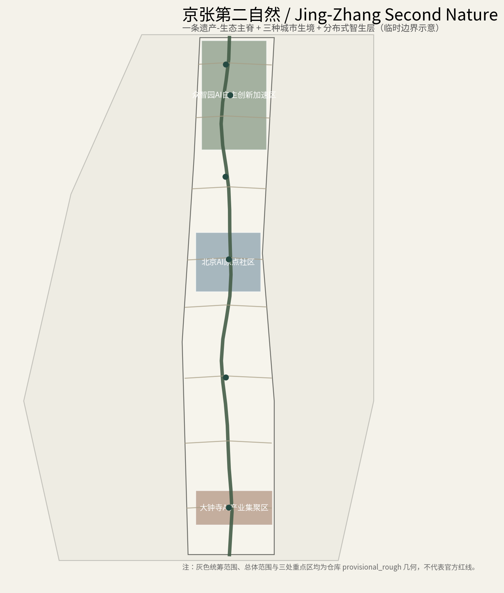
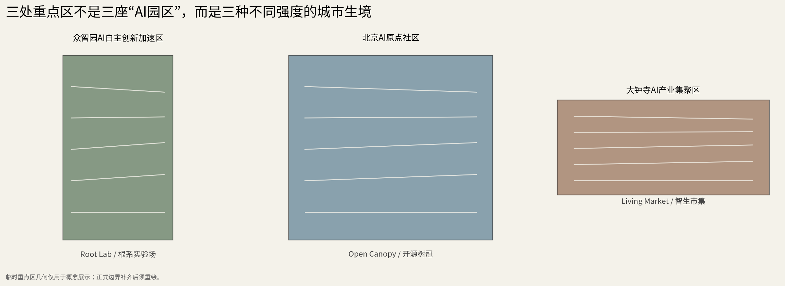
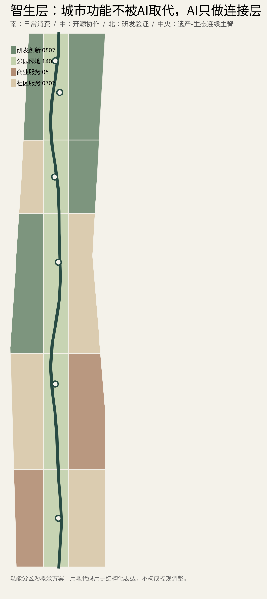
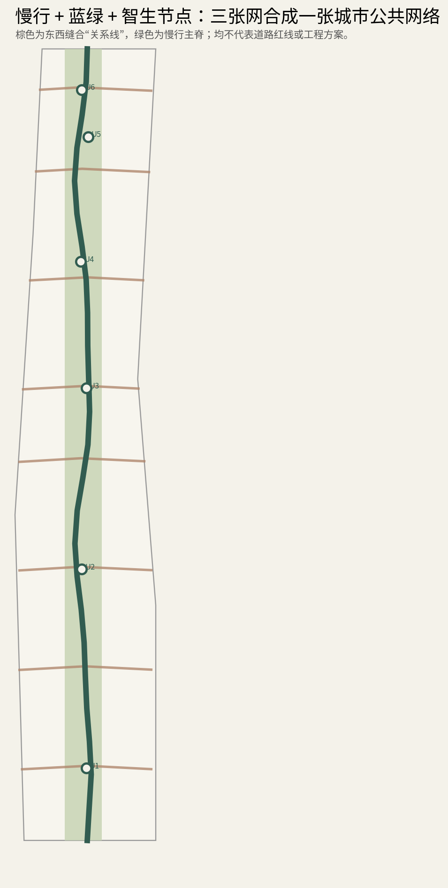
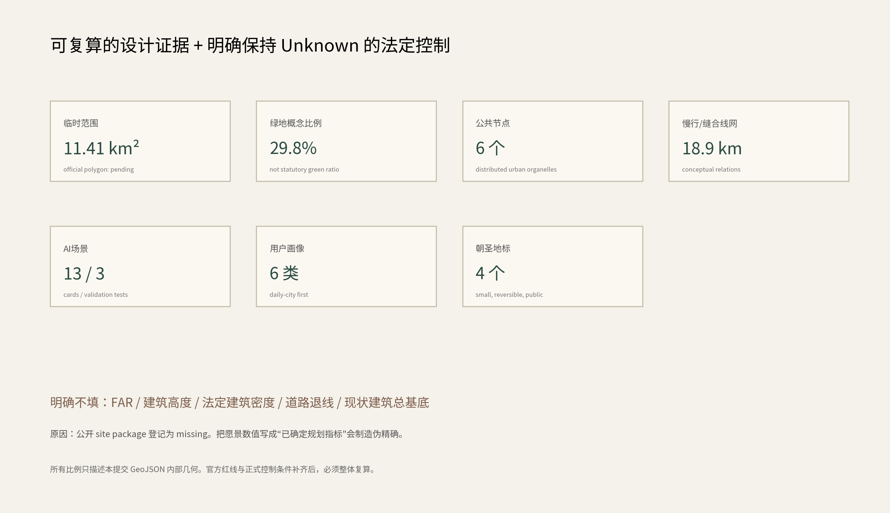

京张第二自然 · 智生层
Jing-Zhang Second Nature — The Living Intelligence Layer
略偏有机未来，但学校、社区、商业、交通与遗址公园始终是主角；AI作为可替换、可退出、分布式的第二自然基础层。
总览地图 · 三层范围

来源：官方公告与仓库 provisional 边界。假设：精确官方 polygon 到位后整体复算；当前边界不得解释为官方红线。
重点区域 · 用地分区


三处重点区域分别为 Root Lab、Open Canopy、Living Market；建筑只表达可深化的载体类型，不代表逐栋拆改留或审定规模。
交通慢行 · 蓝绿公共空间

遗产—生态主脊、八处东西缝合关系与低速设备概念路径共同构成连续公共界面；工程线位仍待专业深化。
建筑 · 更新项目
Root Lab
研发—验证庭—观察廊的有边界测试原型。
Open Canopy
开放首层、共享工坊、开发者林下客厅。
Living Market
普通商业、通勤与社区服务中的智能原生界面。
AI 场景 · 任务覆盖
13
AI 场景卡
3
产业测试验证场景
6
用户画像
4
AI 朝圣地标
任务覆盖：官方 17 项范围/设计任务 + agent.1—agent.6；场景均保留隐私边界、可退出路径与人工复核。
核心指标
11.41 km²
site_area_sqm · provisional geometry29.8%
green_ratio · design-side concept0.89%
public_space_ratio · design-side concept
自检状态 · 来源 · 假设
自检状态
边界置信度、拓扑、指标重算、专业证据、离线HTML均纳入 self_check；正式 push 前由官方 self_check_submission.py 再运行一次。
来源
官方公告、清权 agent taskbook、住建部/自然资源部公开标准、仓库临时边界及五个公开国际案例。
假设
FAR、高度、法定密度、退线、现状建筑、权属、道路/市政工程条件缺失时保持 unknown。